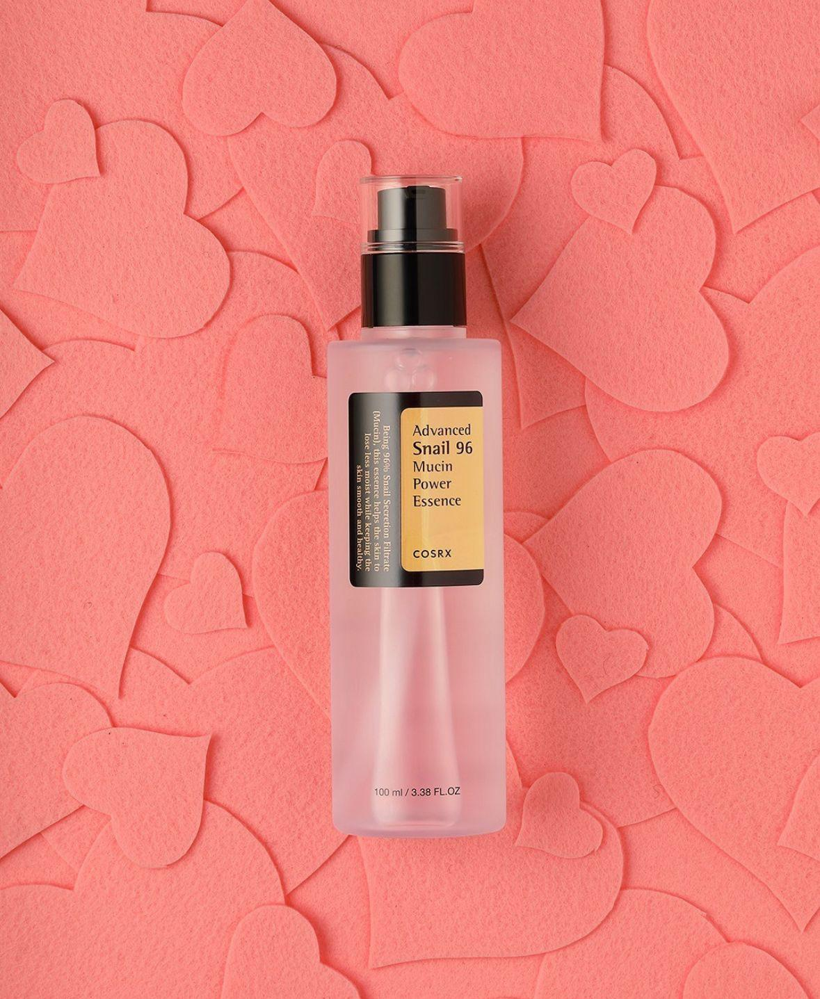
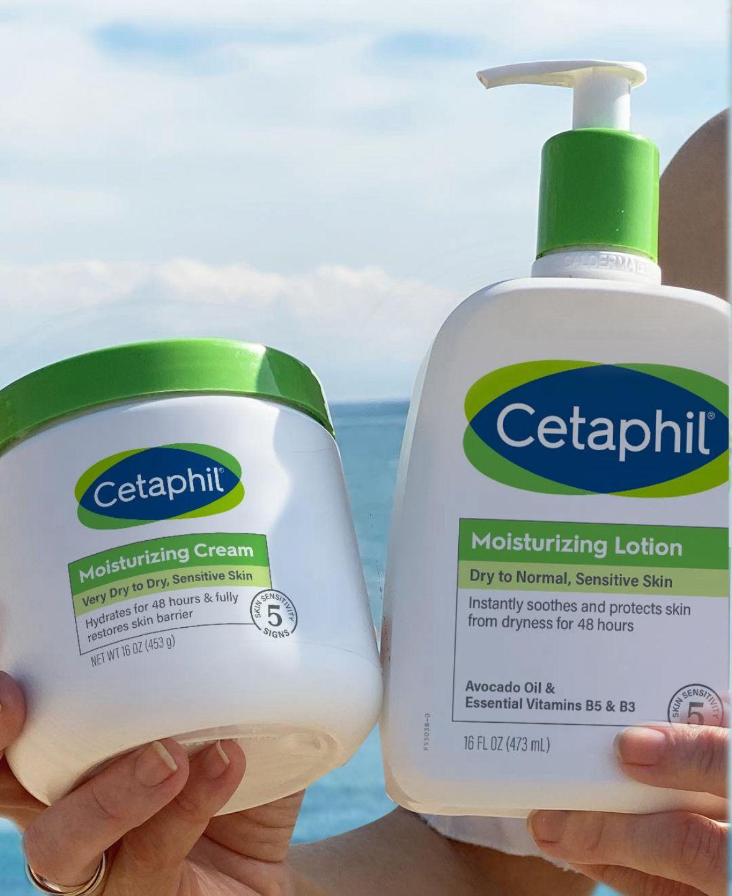
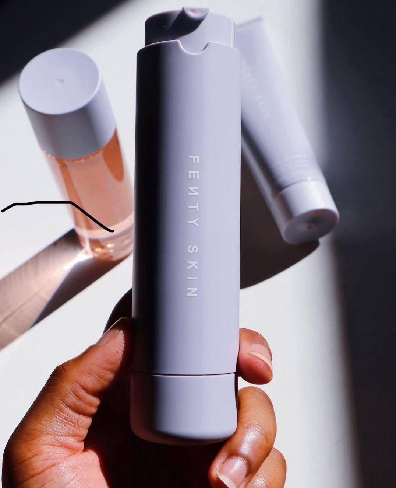

PRODUCTS AND BANDS I USE FOR DRY AND SENSETIVE SKIN
- Cleanser: Cetaphil - Gentle Skin Cleanser
- Hyderating Serum - COSRX Snail 96 Essence
- Niacinamide:Glow Recipe Watermelon Glow Niacinamide Dew Droup serum
- Moisturizer - Cetaphil Moisturizing lotion(dry to normal,sensitive skin
- Sunscreen - Fenty skin Hydra Vizor invisible moisturizer broad spectrum SPF 30 suncreen


 Click here for product link
 Click here for product link
 Click here for product link
IS MY REVIEW HELPFUL?